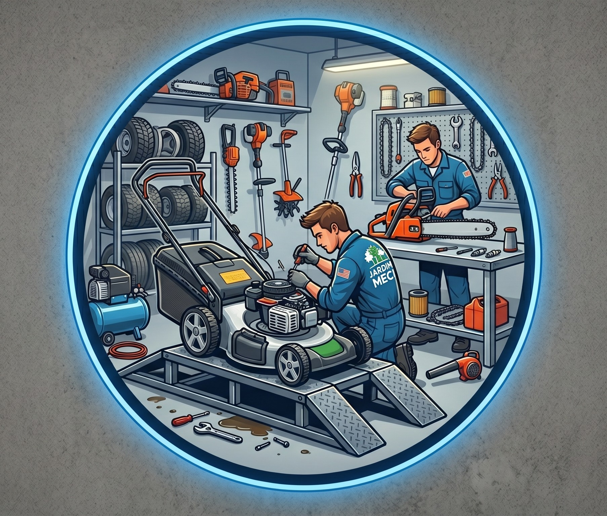

Manutenção profissional de equipamentos de jardim
Reparação, afinação e venda de moto-serras e máquinas de relva para clientes particulares e profissionais.
Motos · Bicicletas · Jardinagem
Reparação, afinação e venda de moto-serras e máquinas de relva para clientes particulares e profissionais.
Revisão geral de moto-serras e máquinas de relva, com substituição de consumíveis e testes de segurança.
Afiação precisa de correntes de moto-serra para um corte mais rápido e seguro.
Gama selecionada de moto-serras, máquinas de relva e roçadoras para uso doméstico e profissional.

Na Oficina Joaquim Luís Simões, compreendemos que as suas ferramentas de jardinagem são essenciais. Dispomos de uma bancada de trabalho especializada e equipada com ferramentas de diagnóstico avançadas.
O nosso processo engloba desde a limpeza completa do sistema de carburação até à afiação de precisão de lâminas e correntes de moto-serra, usando lubrificantes de alta performance.
💡 Todos os equipamentos são exaustivamente testados sob carga antes de serem devolvidos.